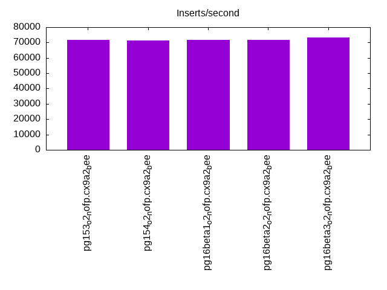
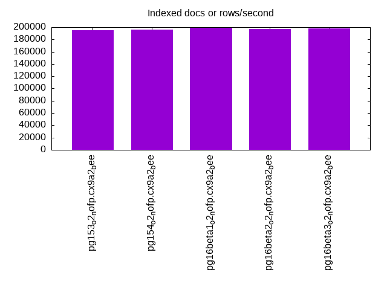
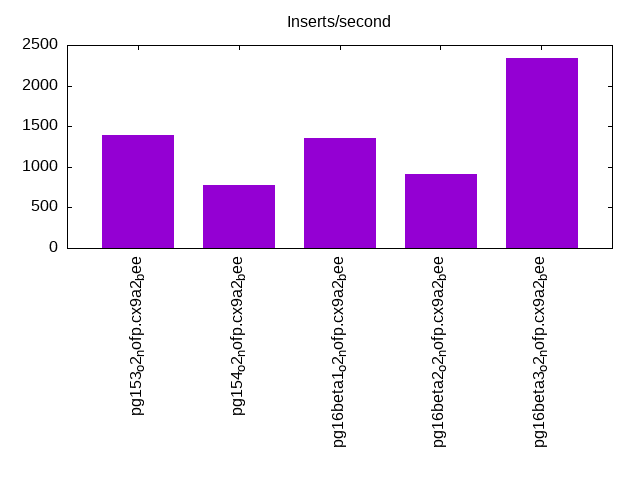
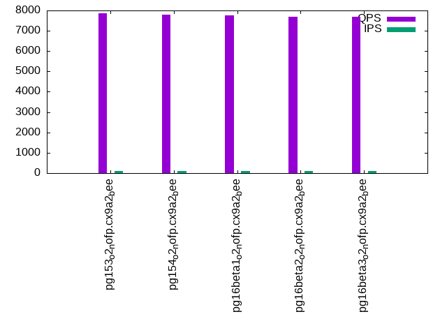
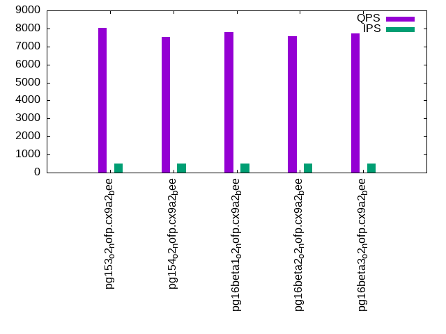
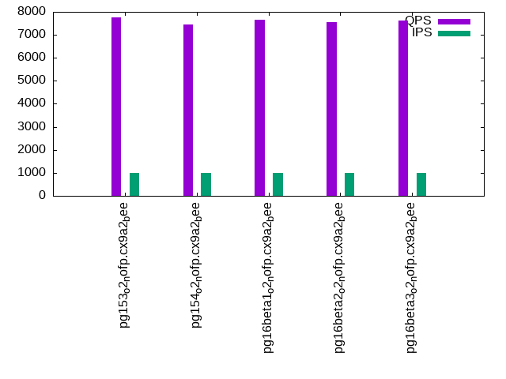

This is a report for the insert benchmark with 800M docs and 1 client(s). It is generated by scripts (bash, awk, sed) and Tufte might not be impressed. An overview of the insert benchmark is here and a short update is here. Below, by DBMS, I mean DBMS+version.config. An example is my8020.c10b40 where my means MySQL, 8020 is version 8.0.20 and c10b40 is the name for the configuration file.
The test server has 8 AMD cores, 16G RAM and an NVMe SSD. It is described here as the Beelink. The benchmark was run with 1 client and there were 1 or 3 connections per client (1 for queries or inserts without rate limits, 1+1 for rate limited inserts+deletes). It uses 1 table. It loads 20M rows per table without secondary indexes, creates secondary indexes, then inserts 200M rows per table with a delete per insert to avoid growing the table. It then does 3 read+write tests for 7200s each that do queries as fast as possible with 100, 500 and then 1000 inserts/second/client concurrent with the queries and 1000 deletes/second to avoid growing the table. The database is cached by Postgres. Clients and the DBMS share one server. The per-database configs are in the per-database subdirectories here.
The tested DBMS are:
The numbers are inserts/s for l.i0 and l.i1, indexed docs (or rows) /s for l.x and queries/s for q*.2. The values are the average rate over the entire test for inserts (IPS) and queries (QPS). The range of values for IPS and QPS is split into 3 parts: bottom 25%, middle 50%, top 25%. Values in the bottom 25% have a red background, values in the top 25% have a green background and values in the middle have no color. A gray background is used for values that can be ignored because the DBMS did not sustain the target insert rate. Red backgrounds are not used when the minimum value is within 80% of the max value.
| dbms | l.i0 | l.x | l.i1 | q100.1 | q500.1 | q1000.1 |
|---|---|---|---|---|---|---|
| pg153_o2_nofp.cx9a2_bee | 71723 | 195480 | 1396 | 7869 | 8044 | 7746 |
| pg154_o2_nofp.cx9a2_bee | 71422 | 195623 | 770 | 7777 | 7548 | 7465 |
| pg16beta1_o2_nofp.cx9a2_bee | 71627 | 199427 | 1349 | 7773 | 7784 | 7668 |
| pg16beta2_o2_nofp.cx9a2_bee | 71582 | 196972 | 915 | 7693 | 7582 | 7553 |
| pg16beta3_o2_nofp.cx9a2_bee | 73153 | 198094 | 2340 | 7703 | 7721 | 7627 |
This table has relative throughput, throughput for the DBMS relative to the DBMS in the first line, using the absolute throughput from the previous table. Values less than 0.95 have a yellow background. Values greater than 1.05 have a blue background.
| dbms | l.i0 | l.x | l.i1 | q100.1 | q500.1 | q1000.1 |
|---|---|---|---|---|---|---|
| pg153_o2_nofp.cx9a2_bee | 1.00 | 1.00 | 1.00 | 1.00 | 1.00 | 1.00 |
| pg154_o2_nofp.cx9a2_bee | 1.00 | 1.00 | 0.55 | 0.99 | 0.94 | 0.96 |
| pg16beta1_o2_nofp.cx9a2_bee | 1.00 | 1.02 | 0.97 | 0.99 | 0.97 | 0.99 |
| pg16beta2_o2_nofp.cx9a2_bee | 1.00 | 1.01 | 0.66 | 0.98 | 0.94 | 0.98 |
| pg16beta3_o2_nofp.cx9a2_bee | 1.02 | 1.01 | 1.68 | 0.98 | 0.96 | 0.98 |
This lists the average rate of inserts/s for the tests that do inserts concurrent with queries. For such tests the query rate is listed in the table above. The read+write tests are setup so that the insert rate should match the target rate every second. Cells that are not at least 95% of the target have a red background to indicate a failure to satisfy the target.
| dbms | q100.1 | q500.1 | q1000.1 |
|---|---|---|---|
| pg153_o2_nofp.cx9a2_bee | 100 | 499 | 998 |
| pg154_o2_nofp.cx9a2_bee | 100 | 499 | 997 |
| pg16beta1_o2_nofp.cx9a2_bee | 100 | 499 | 998 |
| pg16beta2_o2_nofp.cx9a2_bee | 100 | 499 | 998 |
| pg16beta3_o2_nofp.cx9a2_bee | 100 | 499 | 998 |
| target | 100 | 500 | 1000 |
l.i0: load without secondary indexes. Graphs for performance per 1-second interval are here.
Average throughput:
Insert response time histogram: each cell has the percentage of responses that take <= the time in the header and max is the max response time in seconds. For the max column values in the top 25% of the range have a red background and in the bottom 25% of the range have a green background. The red background is not used when the min value is within 80% of the max value.
| dbms | 256us | 1ms | 4ms | 16ms | 64ms | 256ms | 1s | 4s | 16s | gt | max |
|---|---|---|---|---|---|---|---|---|---|---|---|
| pg153_o2_nofp.cx9a2_bee | 99.998 | 0.002 | 0.001 | 0.055 | |||||||
| pg154_o2_nofp.cx9a2_bee | 99.998 | 0.001 | nonzero | 0.058 | |||||||
| pg16beta1_o2_nofp.cx9a2_bee | 99.999 | 0.001 | nonzero | 0.056 | |||||||
| pg16beta2_o2_nofp.cx9a2_bee | 99.999 | 0.001 | nonzero | nonzero | 0.083 | ||||||
| pg16beta3_o2_nofp.cx9a2_bee | 99.998 | 0.001 | nonzero | 0.055 |
Performance metrics for the DBMS listed above. Some are normalized by throughput, others are not. Legend for results is here.
ips qps rps rmbps wps wmbps rpq rkbpq wpi wkbpi csps cpups cspq cpupq dbgb1 dbgb2 rss maxop p50 p99 tag 71723 0 30 0.2 104.5 29.6 0.000 0.003 0.001 0.423 8755 22.3 0.122 25 76.5 116.6 2.5 0.055 71921 69720 800m.pg153_o2_nofp.cx9a2_bee 71422 0 30 0.2 99.2 29.3 0.000 0.003 0.001 0.420 8719 22.3 0.122 25 76.5 116.6 3.5 0.058 71621 69568 800m.pg154_o2_nofp.cx9a2_bee 71627 0 30 0.2 104.8 29.6 0.000 0.003 0.001 0.423 8736 22.7 0.122 25 76.5 116.6 0.4 0.056 71853 69718 800m.pg16beta1_o2_nofp.cx9a2_bee 71582 0 30 0.2 104.3 29.6 0.000 0.003 0.001 0.423 8734 22.3 0.122 25 76.5 116.6 2.6 0.083 71821 69616 800m.pg16beta2_o2_nofp.cx9a2_bee 73153 0 32 0.3 105.6 30.2 0.000 0.004 0.001 0.423 8920 22.4 0.122 24 76.5 116.6 4.5 0.055 73419 71010 800m.pg16beta3_o2_nofp.cx9a2_bee
l.x: create secondary indexes.
Average throughput:
Performance metrics for the DBMS listed above. Some are normalized by throughput, others are not. Legend for results is here.
ips qps rps rmbps wps wmbps rpq rkbpq wpi wkbpi csps cpups cspq cpupq dbgb1 dbgb2 rss maxop p50 p99 tag 195480 0 570 70.6 185.2 66.6 0.003 0.370 0.001 0.349 406 12.5 0.002 5 147.0 187.1 10.2 0.005 NA NA 800m.pg153_o2_nofp.cx9a2_bee 195623 0 570 70.6 183.6 66.8 0.003 0.370 0.001 0.350 428 12.4 0.002 5 147.0 187.1 10.2 0.005 NA NA 800m.pg154_o2_nofp.cx9a2_bee 199427 0 579 71.9 184.2 67.8 0.003 0.369 0.001 0.348 423 12.5 0.002 5 147.0 187.1 10.2 0.006 NA NA 800m.pg16beta1_o2_nofp.cx9a2_bee 196972 0 572 71.0 181.8 67.1 0.003 0.369 0.001 0.349 416 12.4 0.002 5 147.0 187.1 10.2 0.009 NA NA 800m.pg16beta2_o2_nofp.cx9a2_bee 198094 0 576 71.5 184.3 67.4 0.003 0.370 0.001 0.349 415 12.4 0.002 5 147.0 187.1 10.2 0.007 NA NA 800m.pg16beta3_o2_nofp.cx9a2_bee
l.i1: continue load after secondary indexes created. Graphs for performance per 1-second interval are here.
Average throughput:
Insert response time histogram: each cell has the percentage of responses that take <= the time in the header and max is the max response time in seconds. For the max column values in the top 25% of the range have a red background and in the bottom 25% of the range have a green background. The red background is not used when the min value is within 80% of the max value.
| dbms | 256us | 1ms | 4ms | 16ms | 64ms | 256ms | 1s | 4s | 16s | gt | max |
|---|---|---|---|---|---|---|---|---|---|---|---|
| pg153_o2_nofp.cx9a2_bee | 82.806 | 17.148 | 0.046 | 0.169 | |||||||
| pg154_o2_nofp.cx9a2_bee | 88.801 | 11.198 | 0.001 | 0.069 | |||||||
| pg16beta1_o2_nofp.cx9a2_bee | 81.573 | 18.381 | 0.046 | 0.153 | |||||||
| pg16beta2_o2_nofp.cx9a2_bee | 86.638 | 13.358 | 0.004 | 0.208 | |||||||
| pg16beta3_o2_nofp.cx9a2_bee | 82.052 | 17.902 | 0.045 | 0.186 |
Delete response time histogram: each cell has the percentage of responses that take <= the time in the header and max is the max response time in seconds. For the max column values in the top 25% of the range have a red background and in the bottom 25% of the range have a green background. The red background is not used when the min value is within 80% of the max value.
| dbms | 256us | 1ms | 4ms | 16ms | 64ms | 256ms | 1s | 4s | 16s | gt | max |
|---|---|---|---|---|---|---|---|---|---|---|---|
| pg153_o2_nofp.cx9a2_bee | 48.766 | 1.837 | 6.635 | 24.201 | 18.561 | 0.123 | |||||
| pg154_o2_nofp.cx9a2_bee | 0.003 | 24.382 | 1.243 | 6.465 | 24.255 | 43.651 | nonzero | 0.306 | |||
| pg16beta1_o2_nofp.cx9a2_bee | 0.001 | 47.175 | 2.275 | 9.714 | 23.938 | 16.896 | 0.133 | ||||
| pg16beta2_o2_nofp.cx9a2_bee | 0.002 | 41.046 | 1.193 | 6.524 | 23.939 | 27.297 | nonzero | 0.332 | |||
| pg16beta3_o2_nofp.cx9a2_bee | 0.001 | 67.635 | 1.241 | 6.441 | 23.845 | 0.838 | 0.068 |
Performance metrics for the DBMS listed above. Some are normalized by throughput, others are not. Legend for results is here.
ips qps rps rmbps wps wmbps rpq rkbpq wpi wkbpi csps cpups cspq cpupq dbgb1 dbgb2 rss maxop p50 p99 tag 1396 0 2298 24.3 2715.7 41.5 1.646 17.807 1.946 30.446 5461 12.7 3.913 728 149.6 189.6 3.4 0.169 799 400 800m.pg153_o2_nofp.cx9a2_bee 770 0 1240 9.9 1431.0 20.8 1.610 13.100 1.858 27.683 3043 13.2 3.952 1371 150.5 179.4 9.8 0.069 449 300 800m.pg154_o2_nofp.cx9a2_bee 1349 0 2222 23.4 2632.4 40.1 1.647 17.793 1.951 30.435 5314 12.8 3.939 759 149.7 188.8 3.0 0.153 799 399 800m.pg16beta1_o2_nofp.cx9a2_bee 915 0 1472 11.8 1699.2 24.7 1.608 13.251 1.857 27.655 3567 12.6 3.897 1101 150.5 182.8 1.3 0.208 350 250 800m.pg16beta2_o2_nofp.cx9a2_bee 2340 0 3841 40.5 4537.5 68.4 1.641 17.716 1.939 29.911 9056 11.6 3.870 397 149.7 189.7 3.3 0.186 2447 749 800m.pg16beta3_o2_nofp.cx9a2_bee
q100.1: range queries with 100 insert/s per client. Graphs for performance per 1-second interval are here.
Average throughput:
Query response time histogram: each cell has the percentage of responses that take <= the time in the header and max is the max response time in seconds. For max values in the top 25% of the range have a red background and in the bottom 25% of the range have a green background. The red background is not used when the min value is within 80% of the max value.
| dbms | 256us | 1ms | 4ms | 16ms | 64ms | 256ms | 1s | 4s | 16s | gt | max |
|---|---|---|---|---|---|---|---|---|---|---|---|
| pg153_o2_nofp.cx9a2_bee | 99.613 | 0.383 | 0.002 | 0.002 | nonzero | 0.028 | |||||
| pg154_o2_nofp.cx9a2_bee | 99.576 | 0.421 | 0.001 | 0.002 | nonzero | 0.019 | |||||
| pg16beta1_o2_nofp.cx9a2_bee | 99.564 | 0.432 | 0.002 | 0.002 | 0.016 | ||||||
| pg16beta2_o2_nofp.cx9a2_bee | 99.551 | 0.446 | 0.001 | 0.002 | nonzero | 0.024 | |||||
| pg16beta3_o2_nofp.cx9a2_bee | 99.583 | 0.412 | 0.003 | 0.002 | 0.010 |
Insert response time histogram: each cell has the percentage of responses that take <= the time in the header and max is the max response time in seconds. For max values in the top 25% of the range have a red background and in the bottom 25% of the range have a green background. The red background is not used when the min value is within 80% of the max value.
| dbms | 256us | 1ms | 4ms | 16ms | 64ms | 256ms | 1s | 4s | 16s | gt | max |
|---|---|---|---|---|---|---|---|---|---|---|---|
| pg153_o2_nofp.cx9a2_bee | 78.014 | 21.986 | 0.033 | ||||||||
| pg154_o2_nofp.cx9a2_bee | 76.250 | 23.750 | 0.032 | ||||||||
| pg16beta1_o2_nofp.cx9a2_bee | 68.806 | 31.194 | 0.052 | ||||||||
| pg16beta2_o2_nofp.cx9a2_bee | 78.583 | 21.417 | 0.031 | ||||||||
| pg16beta3_o2_nofp.cx9a2_bee | 67.014 | 32.986 | 0.056 |
Delete response time histogram: each cell has the percentage of responses that take <= the time in the header and max is the max response time in seconds. For max values in the top 25% of the range have a red background and in the bottom 25% of the range have a green background. The red background is not used when the min value is within 80% of the max value.
| dbms | 256us | 1ms | 4ms | 16ms | 64ms | 256ms | 1s | 4s | 16s | gt | max |
|---|---|---|---|---|---|---|---|---|---|---|---|
| pg153_o2_nofp.cx9a2_bee | 13.167 | 65.375 | 21.458 | 0.011 | |||||||
| pg154_o2_nofp.cx9a2_bee | 0.958 | 98.917 | 0.056 | 0.069 | 0.010 | ||||||
| pg16beta1_o2_nofp.cx9a2_bee | 12.583 | 66.208 | 21.208 | 0.011 | |||||||
| pg16beta2_o2_nofp.cx9a2_bee | 12.597 | 66.167 | 21.236 | 0.011 | |||||||
| pg16beta3_o2_nofp.cx9a2_bee | 0.514 | 99.111 | 0.069 | 0.306 | 0.010 |
Performance metrics for the DBMS listed above. Some are normalized by throughput, others are not. Legend for results is here.
ips qps rps rmbps wps wmbps rpq rkbpq wpi wkbpi csps cpups cspq cpupq dbgb1 dbgb2 rss maxop p50 p99 tag 100 7869 198 1.6 185.5 3.2 0.025 0.205 1.860 33.104 30742 12.6 3.907 128 149.6 189.6 10.1 0.028 7469 5819 800m.pg153_o2_nofp.cx9a2_bee 100 7777 198 1.6 156.9 3.0 0.026 0.208 1.574 31.246 30381 12.6 3.907 130 150.5 190.5 10.1 0.019 7399 5662 800m.pg154_o2_nofp.cx9a2_bee 100 7773 198 1.6 186.7 3.3 0.025 0.208 1.873 33.727 30359 12.7 3.906 131 149.7 189.8 10.1 0.016 7327 5784 800m.pg16beta1_o2_nofp.cx9a2_bee 100 7693 199 1.6 155.8 3.0 0.026 0.211 1.563 31.081 30060 12.5 3.908 130 150.5 190.5 10.1 0.024 7286 5614 800m.pg16beta2_o2_nofp.cx9a2_bee 100 7703 198 1.6 202.2 3.4 0.026 0.210 2.028 35.081 30101 12.6 3.908 131 149.7 189.7 10.1 0.010 7390 5690 800m.pg16beta3_o2_nofp.cx9a2_bee
q500.1: range queries with 500 insert/s per client. Graphs for performance per 1-second interval are here.
Average throughput:
Query response time histogram: each cell has the percentage of responses that take <= the time in the header and max is the max response time in seconds. For max values in the top 25% of the range have a red background and in the bottom 25% of the range have a green background. The red background is not used when the min value is within 80% of the max value.
| dbms | 256us | 1ms | 4ms | 16ms | 64ms | 256ms | 1s | 4s | 16s | gt | max |
|---|---|---|---|---|---|---|---|---|---|---|---|
| pg153_o2_nofp.cx9a2_bee | 99.871 | 0.124 | 0.001 | 0.004 | 0.010 | ||||||
| pg154_o2_nofp.cx9a2_bee | 99.862 | 0.133 | 0.001 | 0.004 | 0.016 | ||||||
| pg16beta1_o2_nofp.cx9a2_bee | 99.841 | 0.153 | 0.001 | 0.004 | 0.010 | ||||||
| pg16beta2_o2_nofp.cx9a2_bee | 99.845 | 0.149 | 0.001 | 0.005 | 0.016 | ||||||
| pg16beta3_o2_nofp.cx9a2_bee | 99.870 | 0.125 | 0.001 | 0.005 | 0.016 |
Insert response time histogram: each cell has the percentage of responses that take <= the time in the header and max is the max response time in seconds. For max values in the top 25% of the range have a red background and in the bottom 25% of the range have a green background. The red background is not used when the min value is within 80% of the max value.
| dbms | 256us | 1ms | 4ms | 16ms | 64ms | 256ms | 1s | 4s | 16s | gt | max |
|---|---|---|---|---|---|---|---|---|---|---|---|
| pg153_o2_nofp.cx9a2_bee | 93.347 | 6.653 | 0.031 | ||||||||
| pg154_o2_nofp.cx9a2_bee | 94.156 | 5.844 | 0.031 | ||||||||
| pg16beta1_o2_nofp.cx9a2_bee | 92.453 | 7.547 | 0.030 | ||||||||
| pg16beta2_o2_nofp.cx9a2_bee | 92.817 | 7.183 | 0.034 | ||||||||
| pg16beta3_o2_nofp.cx9a2_bee | 93.208 | 6.792 | 0.029 |
Delete response time histogram: each cell has the percentage of responses that take <= the time in the header and max is the max response time in seconds. For max values in the top 25% of the range have a red background and in the bottom 25% of the range have a green background. The red background is not used when the min value is within 80% of the max value.
| dbms | 256us | 1ms | 4ms | 16ms | 64ms | 256ms | 1s | 4s | 16s | gt | max |
|---|---|---|---|---|---|---|---|---|---|---|---|
| pg153_o2_nofp.cx9a2_bee | 0.006 | 68.556 | 31.439 | 0.028 | |||||||
| pg154_o2_nofp.cx9a2_bee | 3.603 | 96.139 | 0.050 | 0.208 | 0.010 | ||||||
| pg16beta1_o2_nofp.cx9a2_bee | 66.311 | 33.689 | 0.027 | ||||||||
| pg16beta2_o2_nofp.cx9a2_bee | 0.006 | 67.381 | 32.614 | 0.027 | |||||||
| pg16beta3_o2_nofp.cx9a2_bee | 3.333 | 96.372 | 0.083 | 0.211 | 0.010 |
Performance metrics for the DBMS listed above. Some are normalized by throughput, others are not. Legend for results is here.
ips qps rps rmbps wps wmbps rpq rkbpq wpi wkbpi csps cpups cspq cpupq dbgb1 dbgb2 rss maxop p50 p99 tag 499 8044 804 6.4 951.2 14.6 0.100 0.816 1.907 30.001 32786 15.1 4.076 150 149.7 186.9 10.1 0.010 7639 7142 800m.pg153_o2_nofp.cx9a2_bee 499 7548 801 6.4 956.2 14.5 0.106 0.866 1.918 29.863 30899 13.6 4.094 144 150.5 187.8 10.1 0.016 7258 7016 800m.pg154_o2_nofp.cx9a2_bee 499 7784 804 6.4 958.4 14.6 0.103 0.843 1.922 30.044 31804 15.3 4.086 157 149.8 186.5 10.0 0.010 7381 7032 800m.pg16beta1_o2_nofp.cx9a2_bee 499 7582 804 6.4 951.9 14.5 0.106 0.866 1.909 29.779 31037 15.3 4.093 161 150.5 187.7 10.1 0.016 7256 6973 800m.pg16beta2_o2_nofp.cx9a2_bee 499 7721 802 6.4 965.6 14.7 0.104 0.848 1.935 30.128 31538 13.5 4.085 140 149.8 186.2 10.0 0.016 7332 7037 800m.pg16beta3_o2_nofp.cx9a2_bee
q1000.1: range queries with 1000 insert/s per client. Graphs for performance per 1-second interval are here.
Average throughput:
Query response time histogram: each cell has the percentage of responses that take <= the time in the header and max is the max response time in seconds. For max values in the top 25% of the range have a red background and in the bottom 25% of the range have a green background. The red background is not used when the min value is within 80% of the max value.
| dbms | 256us | 1ms | 4ms | 16ms | 64ms | 256ms | 1s | 4s | 16s | gt | max |
|---|---|---|---|---|---|---|---|---|---|---|---|
| pg153_o2_nofp.cx9a2_bee | 99.793 | 0.196 | 0.002 | 0.009 | 0.015 | ||||||
| pg154_o2_nofp.cx9a2_bee | 99.786 | 0.202 | 0.001 | 0.010 | 0.015 | ||||||
| pg16beta1_o2_nofp.cx9a2_bee | 99.779 | 0.211 | 0.002 | 0.008 | 0.015 | ||||||
| pg16beta2_o2_nofp.cx9a2_bee | 99.778 | 0.211 | 0.002 | 0.008 | 0.012 | ||||||
| pg16beta3_o2_nofp.cx9a2_bee | 99.804 | 0.184 | 0.001 | 0.010 | 0.016 |
Insert response time histogram: each cell has the percentage of responses that take <= the time in the header and max is the max response time in seconds. For max values in the top 25% of the range have a red background and in the bottom 25% of the range have a green background. The red background is not used when the min value is within 80% of the max value.
| dbms | 256us | 1ms | 4ms | 16ms | 64ms | 256ms | 1s | 4s | 16s | gt | max |
|---|---|---|---|---|---|---|---|---|---|---|---|
| pg153_o2_nofp.cx9a2_bee | 97.433 | 2.567 | 0.028 | ||||||||
| pg154_o2_nofp.cx9a2_bee | 97.549 | 2.451 | 0.027 | ||||||||
| pg16beta1_o2_nofp.cx9a2_bee | 97.597 | 2.403 | 0.029 | ||||||||
| pg16beta2_o2_nofp.cx9a2_bee | 97.932 | 2.068 | 0.033 | ||||||||
| pg16beta3_o2_nofp.cx9a2_bee | 97.258 | 2.742 | 0.029 |
Delete response time histogram: each cell has the percentage of responses that take <= the time in the header and max is the max response time in seconds. For max values in the top 25% of the range have a red background and in the bottom 25% of the range have a green background. The red background is not used when the min value is within 80% of the max value.
| dbms | 256us | 1ms | 4ms | 16ms | 64ms | 256ms | 1s | 4s | 16s | gt | max |
|---|---|---|---|---|---|---|---|---|---|---|---|
| pg153_o2_nofp.cx9a2_bee | 1.289 | 50.665 | 0.047 | 0.067 | 47.931 | 0.001 | 0.070 | ||||
| pg154_o2_nofp.cx9a2_bee | 2.671 | 97.210 | 0.068 | 0.051 | 0.009 | ||||||
| pg16beta1_o2_nofp.cx9a2_bee | 0.646 | 33.112 | 0.028 | 0.021 | 66.192 | 0.001 | 0.067 | ||||
| pg16beta2_o2_nofp.cx9a2_bee | 0.692 | 31.499 | 0.024 | 0.008 | 67.776 | 0.001 | 0.068 | ||||
| pg16beta3_o2_nofp.cx9a2_bee | 2.078 | 97.788 | 0.067 | 0.068 | 0.009 |
Performance metrics for the DBMS listed above. Some are normalized by throughput, others are not. Legend for results is here.
ips qps rps rmbps wps wmbps rpq rkbpq wpi wkbpi csps cpups cspq cpupq dbgb1 dbgb2 rss maxop p50 p99 tag 998 7746 1614 12.9 1912.7 26.9 0.208 1.703 1.916 27.555 33484 17.9 4.323 185 150.0 185.9 10.0 0.015 7401 7046 800m.pg153_o2_nofp.cx9a2_bee 997 7465 1610 12.9 1896.6 26.7 0.216 1.763 1.902 27.396 32474 14.6 4.350 156 150.7 186.7 10.0 0.015 7180 6874 800m.pg154_o2_nofp.cx9a2_bee 998 7668 1615 12.9 1917.6 27.2 0.211 1.721 1.921 27.861 33224 19.9 4.333 208 150.1 186.5 9.9 0.015 7337 6952 800m.pg16beta1_o2_nofp.cx9a2_bee 998 7553 1612 12.9 1907.5 26.8 0.213 1.744 1.911 27.484 32777 19.9 4.339 211 150.7 186.6 9.9 0.012 7240 6888 800m.pg16beta2_o2_nofp.cx9a2_bee 998 7627 1612 12.9 1908.4 27.1 0.211 1.728 1.913 27.863 33079 14.6 4.337 153 150.1 186.6 9.9 0.016 7290 6952 800m.pg16beta3_o2_nofp.cx9a2_bee
l.i0: load without secondary indexes
Performance metrics for all DBMS, not just the ones listed above. Some are normalized by throughput, others are not. Legend for results is here.
ips qps rps rmbps wps wmbps rpq rkbpq wpi wkbpi csps cpups cspq cpupq dbgb1 dbgb2 rss maxop p50 p99 tag 71723 0 30 0.2 104.5 29.6 0.000 0.003 0.001 0.423 8755 22.3 0.122 25 76.5 116.6 2.5 0.055 71921 69720 800m.pg153_o2_nofp.cx9a2_bee 71422 0 30 0.2 99.2 29.3 0.000 0.003 0.001 0.420 8719 22.3 0.122 25 76.5 116.6 3.5 0.058 71621 69568 800m.pg154_o2_nofp.cx9a2_bee 71627 0 30 0.2 104.8 29.6 0.000 0.003 0.001 0.423 8736 22.7 0.122 25 76.5 116.6 0.4 0.056 71853 69718 800m.pg16beta1_o2_nofp.cx9a2_bee 71582 0 30 0.2 104.3 29.6 0.000 0.003 0.001 0.423 8734 22.3 0.122 25 76.5 116.6 2.6 0.083 71821 69616 800m.pg16beta2_o2_nofp.cx9a2_bee 73153 0 32 0.3 105.6 30.2 0.000 0.004 0.001 0.423 8920 22.4 0.122 24 76.5 116.6 4.5 0.055 73419 71010 800m.pg16beta3_o2_nofp.cx9a2_bee
l.x: create secondary indexes
Performance metrics for all DBMS, not just the ones listed above. Some are normalized by throughput, others are not. Legend for results is here.
ips qps rps rmbps wps wmbps rpq rkbpq wpi wkbpi csps cpups cspq cpupq dbgb1 dbgb2 rss maxop p50 p99 tag 195480 0 570 70.6 185.2 66.6 0.003 0.370 0.001 0.349 406 12.5 0.002 5 147.0 187.1 10.2 0.005 NA NA 800m.pg153_o2_nofp.cx9a2_bee 195623 0 570 70.6 183.6 66.8 0.003 0.370 0.001 0.350 428 12.4 0.002 5 147.0 187.1 10.2 0.005 NA NA 800m.pg154_o2_nofp.cx9a2_bee 199427 0 579 71.9 184.2 67.8 0.003 0.369 0.001 0.348 423 12.5 0.002 5 147.0 187.1 10.2 0.006 NA NA 800m.pg16beta1_o2_nofp.cx9a2_bee 196972 0 572 71.0 181.8 67.1 0.003 0.369 0.001 0.349 416 12.4 0.002 5 147.0 187.1 10.2 0.009 NA NA 800m.pg16beta2_o2_nofp.cx9a2_bee 198094 0 576 71.5 184.3 67.4 0.003 0.370 0.001 0.349 415 12.4 0.002 5 147.0 187.1 10.2 0.007 NA NA 800m.pg16beta3_o2_nofp.cx9a2_bee
l.i1: continue load after secondary indexes created
Performance metrics for all DBMS, not just the ones listed above. Some are normalized by throughput, others are not. Legend for results is here.
ips qps rps rmbps wps wmbps rpq rkbpq wpi wkbpi csps cpups cspq cpupq dbgb1 dbgb2 rss maxop p50 p99 tag 1396 0 2298 24.3 2715.7 41.5 1.646 17.807 1.946 30.446 5461 12.7 3.913 728 149.6 189.6 3.4 0.169 799 400 800m.pg153_o2_nofp.cx9a2_bee 770 0 1240 9.9 1431.0 20.8 1.610 13.100 1.858 27.683 3043 13.2 3.952 1371 150.5 179.4 9.8 0.069 449 300 800m.pg154_o2_nofp.cx9a2_bee 1349 0 2222 23.4 2632.4 40.1 1.647 17.793 1.951 30.435 5314 12.8 3.939 759 149.7 188.8 3.0 0.153 799 399 800m.pg16beta1_o2_nofp.cx9a2_bee 915 0 1472 11.8 1699.2 24.7 1.608 13.251 1.857 27.655 3567 12.6 3.897 1101 150.5 182.8 1.3 0.208 350 250 800m.pg16beta2_o2_nofp.cx9a2_bee 2340 0 3841 40.5 4537.5 68.4 1.641 17.716 1.939 29.911 9056 11.6 3.870 397 149.7 189.7 3.3 0.186 2447 749 800m.pg16beta3_o2_nofp.cx9a2_bee
q100.1: range queries with 100 insert/s per client
Performance metrics for all DBMS, not just the ones listed above. Some are normalized by throughput, others are not. Legend for results is here.
ips qps rps rmbps wps wmbps rpq rkbpq wpi wkbpi csps cpups cspq cpupq dbgb1 dbgb2 rss maxop p50 p99 tag 100 7869 198 1.6 185.5 3.2 0.025 0.205 1.860 33.104 30742 12.6 3.907 128 149.6 189.6 10.1 0.028 7469 5819 800m.pg153_o2_nofp.cx9a2_bee 100 7777 198 1.6 156.9 3.0 0.026 0.208 1.574 31.246 30381 12.6 3.907 130 150.5 190.5 10.1 0.019 7399 5662 800m.pg154_o2_nofp.cx9a2_bee 100 7773 198 1.6 186.7 3.3 0.025 0.208 1.873 33.727 30359 12.7 3.906 131 149.7 189.8 10.1 0.016 7327 5784 800m.pg16beta1_o2_nofp.cx9a2_bee 100 7693 199 1.6 155.8 3.0 0.026 0.211 1.563 31.081 30060 12.5 3.908 130 150.5 190.5 10.1 0.024 7286 5614 800m.pg16beta2_o2_nofp.cx9a2_bee 100 7703 198 1.6 202.2 3.4 0.026 0.210 2.028 35.081 30101 12.6 3.908 131 149.7 189.7 10.1 0.010 7390 5690 800m.pg16beta3_o2_nofp.cx9a2_bee
q500.1: range queries with 500 insert/s per client
Performance metrics for all DBMS, not just the ones listed above. Some are normalized by throughput, others are not. Legend for results is here.
ips qps rps rmbps wps wmbps rpq rkbpq wpi wkbpi csps cpups cspq cpupq dbgb1 dbgb2 rss maxop p50 p99 tag 499 8044 804 6.4 951.2 14.6 0.100 0.816 1.907 30.001 32786 15.1 4.076 150 149.7 186.9 10.1 0.010 7639 7142 800m.pg153_o2_nofp.cx9a2_bee 499 7548 801 6.4 956.2 14.5 0.106 0.866 1.918 29.863 30899 13.6 4.094 144 150.5 187.8 10.1 0.016 7258 7016 800m.pg154_o2_nofp.cx9a2_bee 499 7784 804 6.4 958.4 14.6 0.103 0.843 1.922 30.044 31804 15.3 4.086 157 149.8 186.5 10.0 0.010 7381 7032 800m.pg16beta1_o2_nofp.cx9a2_bee 499 7582 804 6.4 951.9 14.5 0.106 0.866 1.909 29.779 31037 15.3 4.093 161 150.5 187.7 10.1 0.016 7256 6973 800m.pg16beta2_o2_nofp.cx9a2_bee 499 7721 802 6.4 965.6 14.7 0.104 0.848 1.935 30.128 31538 13.5 4.085 140 149.8 186.2 10.0 0.016 7332 7037 800m.pg16beta3_o2_nofp.cx9a2_bee
q1000.1: range queries with 1000 insert/s per client
Performance metrics for all DBMS, not just the ones listed above. Some are normalized by throughput, others are not. Legend for results is here.
ips qps rps rmbps wps wmbps rpq rkbpq wpi wkbpi csps cpups cspq cpupq dbgb1 dbgb2 rss maxop p50 p99 tag 998 7746 1614 12.9 1912.7 26.9 0.208 1.703 1.916 27.555 33484 17.9 4.323 185 150.0 185.9 10.0 0.015 7401 7046 800m.pg153_o2_nofp.cx9a2_bee 997 7465 1610 12.9 1896.6 26.7 0.216 1.763 1.902 27.396 32474 14.6 4.350 156 150.7 186.7 10.0 0.015 7180 6874 800m.pg154_o2_nofp.cx9a2_bee 998 7668 1615 12.9 1917.6 27.2 0.211 1.721 1.921 27.861 33224 19.9 4.333 208 150.1 186.5 9.9 0.015 7337 6952 800m.pg16beta1_o2_nofp.cx9a2_bee 998 7553 1612 12.9 1907.5 26.8 0.213 1.744 1.911 27.484 32777 19.9 4.339 211 150.7 186.6 9.9 0.012 7240 6888 800m.pg16beta2_o2_nofp.cx9a2_bee 998 7627 1612 12.9 1908.4 27.1 0.211 1.728 1.913 27.863 33079 14.6 4.337 153 150.1 186.6 9.9 0.016 7290 6952 800m.pg16beta3_o2_nofp.cx9a2_bee
Insert response time histogram
256us 1ms 4ms 16ms 64ms 256ms 1s 4s 16s gt max tag 0.000 0.000 99.998 0.002 0.001 0.000 0.000 0.000 0.000 0.000 0.055 pg153_o2_nofp.cx9a2_bee 0.000 0.000 99.998 0.001 nonzero 0.000 0.000 0.000 0.000 0.000 0.058 pg154_o2_nofp.cx9a2_bee 0.000 0.000 99.999 0.001 nonzero 0.000 0.000 0.000 0.000 0.000 0.056 pg16beta1_o2_nofp.cx9a2_bee 0.000 0.000 99.999 0.001 nonzero nonzero 0.000 0.000 0.000 0.000 0.083 pg16beta2_o2_nofp.cx9a2_bee 0.000 0.000 99.998 0.001 nonzero 0.000 0.000 0.000 0.000 0.000 0.055 pg16beta3_o2_nofp.cx9a2_bee
TODO - determine whether there is data for create index response time
Insert response time histogram
256us 1ms 4ms 16ms 64ms 256ms 1s 4s 16s gt max tag 0.000 0.000 0.000 82.806 17.148 0.046 0.000 0.000 0.000 0.000 0.169 pg153_o2_nofp.cx9a2_bee 0.000 0.000 0.000 88.801 11.198 0.001 0.000 0.000 0.000 0.000 0.069 pg154_o2_nofp.cx9a2_bee 0.000 0.000 0.000 81.573 18.381 0.046 0.000 0.000 0.000 0.000 0.153 pg16beta1_o2_nofp.cx9a2_bee 0.000 0.000 0.000 86.638 13.358 0.004 0.000 0.000 0.000 0.000 0.208 pg16beta2_o2_nofp.cx9a2_bee 0.000 0.000 0.000 82.052 17.902 0.045 0.000 0.000 0.000 0.000 0.186 pg16beta3_o2_nofp.cx9a2_bee
Delete response time histogram
256us 1ms 4ms 16ms 64ms 256ms 1s 4s 16s gt max tag 0.000 48.766 1.837 6.635 24.201 18.561 0.000 0.000 0.000 0.000 0.123 pg153_o2_nofp.cx9a2_bee 0.003 24.382 1.243 6.465 24.255 43.651 nonzero 0.000 0.000 0.000 0.306 pg154_o2_nofp.cx9a2_bee 0.001 47.175 2.275 9.714 23.938 16.896 0.000 0.000 0.000 0.000 0.133 pg16beta1_o2_nofp.cx9a2_bee 0.002 41.046 1.193 6.524 23.939 27.297 nonzero 0.000 0.000 0.000 0.332 pg16beta2_o2_nofp.cx9a2_bee 0.001 67.635 1.241 6.441 23.845 0.838 0.000 0.000 0.000 0.000 0.068 pg16beta3_o2_nofp.cx9a2_bee
Query response time histogram
256us 1ms 4ms 16ms 64ms 256ms 1s 4s 16s gt max tag 99.613 0.383 0.002 0.002 nonzero 0.000 0.000 0.000 0.000 0.000 0.028 pg153_o2_nofp.cx9a2_bee 99.576 0.421 0.001 0.002 nonzero 0.000 0.000 0.000 0.000 0.000 0.019 pg154_o2_nofp.cx9a2_bee 99.564 0.432 0.002 0.002 0.000 0.000 0.000 0.000 0.000 0.000 0.016 pg16beta1_o2_nofp.cx9a2_bee 99.551 0.446 0.001 0.002 nonzero 0.000 0.000 0.000 0.000 0.000 0.024 pg16beta2_o2_nofp.cx9a2_bee 99.583 0.412 0.003 0.002 0.000 0.000 0.000 0.000 0.000 0.000 0.010 pg16beta3_o2_nofp.cx9a2_bee
Insert response time histogram
256us 1ms 4ms 16ms 64ms 256ms 1s 4s 16s gt max tag 0.000 0.000 0.000 78.014 21.986 0.000 0.000 0.000 0.000 0.000 0.033 pg153_o2_nofp.cx9a2_bee 0.000 0.000 0.000 76.250 23.750 0.000 0.000 0.000 0.000 0.000 0.032 pg154_o2_nofp.cx9a2_bee 0.000 0.000 0.000 68.806 31.194 0.000 0.000 0.000 0.000 0.000 0.052 pg16beta1_o2_nofp.cx9a2_bee 0.000 0.000 0.000 78.583 21.417 0.000 0.000 0.000 0.000 0.000 0.031 pg16beta2_o2_nofp.cx9a2_bee 0.000 0.000 0.000 67.014 32.986 0.000 0.000 0.000 0.000 0.000 0.056 pg16beta3_o2_nofp.cx9a2_bee
Delete response time histogram
256us 1ms 4ms 16ms 64ms 256ms 1s 4s 16s gt max tag 0.000 13.167 65.375 21.458 0.000 0.000 0.000 0.000 0.000 0.000 0.011 pg153_o2_nofp.cx9a2_bee 0.958 98.917 0.056 0.069 0.000 0.000 0.000 0.000 0.000 0.000 0.010 pg154_o2_nofp.cx9a2_bee 0.000 12.583 66.208 21.208 0.000 0.000 0.000 0.000 0.000 0.000 0.011 pg16beta1_o2_nofp.cx9a2_bee 0.000 12.597 66.167 21.236 0.000 0.000 0.000 0.000 0.000 0.000 0.011 pg16beta2_o2_nofp.cx9a2_bee 0.514 99.111 0.069 0.306 0.000 0.000 0.000 0.000 0.000 0.000 0.010 pg16beta3_o2_nofp.cx9a2_bee
Query response time histogram
256us 1ms 4ms 16ms 64ms 256ms 1s 4s 16s gt max tag 99.871 0.124 0.001 0.004 0.000 0.000 0.000 0.000 0.000 0.000 0.010 pg153_o2_nofp.cx9a2_bee 99.862 0.133 0.001 0.004 0.000 0.000 0.000 0.000 0.000 0.000 0.016 pg154_o2_nofp.cx9a2_bee 99.841 0.153 0.001 0.004 0.000 0.000 0.000 0.000 0.000 0.000 0.010 pg16beta1_o2_nofp.cx9a2_bee 99.845 0.149 0.001 0.005 0.000 0.000 0.000 0.000 0.000 0.000 0.016 pg16beta2_o2_nofp.cx9a2_bee 99.870 0.125 0.001 0.005 0.000 0.000 0.000 0.000 0.000 0.000 0.016 pg16beta3_o2_nofp.cx9a2_bee
Insert response time histogram
256us 1ms 4ms 16ms 64ms 256ms 1s 4s 16s gt max tag 0.000 0.000 0.000 93.347 6.653 0.000 0.000 0.000 0.000 0.000 0.031 pg153_o2_nofp.cx9a2_bee 0.000 0.000 0.000 94.156 5.844 0.000 0.000 0.000 0.000 0.000 0.031 pg154_o2_nofp.cx9a2_bee 0.000 0.000 0.000 92.453 7.547 0.000 0.000 0.000 0.000 0.000 0.030 pg16beta1_o2_nofp.cx9a2_bee 0.000 0.000 0.000 92.817 7.183 0.000 0.000 0.000 0.000 0.000 0.034 pg16beta2_o2_nofp.cx9a2_bee 0.000 0.000 0.000 93.208 6.792 0.000 0.000 0.000 0.000 0.000 0.029 pg16beta3_o2_nofp.cx9a2_bee
Delete response time histogram
256us 1ms 4ms 16ms 64ms 256ms 1s 4s 16s gt max tag 0.000 0.000 0.006 68.556 31.439 0.000 0.000 0.000 0.000 0.000 0.028 pg153_o2_nofp.cx9a2_bee 3.603 96.139 0.050 0.208 0.000 0.000 0.000 0.000 0.000 0.000 0.010 pg154_o2_nofp.cx9a2_bee 0.000 0.000 0.000 66.311 33.689 0.000 0.000 0.000 0.000 0.000 0.027 pg16beta1_o2_nofp.cx9a2_bee 0.000 0.000 0.006 67.381 32.614 0.000 0.000 0.000 0.000 0.000 0.027 pg16beta2_o2_nofp.cx9a2_bee 3.333 96.372 0.083 0.211 0.000 0.000 0.000 0.000 0.000 0.000 0.010 pg16beta3_o2_nofp.cx9a2_bee
Query response time histogram
256us 1ms 4ms 16ms 64ms 256ms 1s 4s 16s gt max tag 99.793 0.196 0.002 0.009 0.000 0.000 0.000 0.000 0.000 0.000 0.015 pg153_o2_nofp.cx9a2_bee 99.786 0.202 0.001 0.010 0.000 0.000 0.000 0.000 0.000 0.000 0.015 pg154_o2_nofp.cx9a2_bee 99.779 0.211 0.002 0.008 0.000 0.000 0.000 0.000 0.000 0.000 0.015 pg16beta1_o2_nofp.cx9a2_bee 99.778 0.211 0.002 0.008 0.000 0.000 0.000 0.000 0.000 0.000 0.012 pg16beta2_o2_nofp.cx9a2_bee 99.804 0.184 0.001 0.010 0.000 0.000 0.000 0.000 0.000 0.000 0.016 pg16beta3_o2_nofp.cx9a2_bee
Insert response time histogram
256us 1ms 4ms 16ms 64ms 256ms 1s 4s 16s gt max tag 0.000 0.000 0.000 97.433 2.567 0.000 0.000 0.000 0.000 0.000 0.028 pg153_o2_nofp.cx9a2_bee 0.000 0.000 0.000 97.549 2.451 0.000 0.000 0.000 0.000 0.000 0.027 pg154_o2_nofp.cx9a2_bee 0.000 0.000 0.000 97.597 2.403 0.000 0.000 0.000 0.000 0.000 0.029 pg16beta1_o2_nofp.cx9a2_bee 0.000 0.000 0.000 97.932 2.068 0.000 0.000 0.000 0.000 0.000 0.033 pg16beta2_o2_nofp.cx9a2_bee 0.000 0.000 0.000 97.258 2.742 0.000 0.000 0.000 0.000 0.000 0.029 pg16beta3_o2_nofp.cx9a2_bee
Delete response time histogram
256us 1ms 4ms 16ms 64ms 256ms 1s 4s 16s gt max tag 1.289 50.665 0.047 0.067 47.931 0.001 0.000 0.000 0.000 0.000 0.070 pg153_o2_nofp.cx9a2_bee 2.671 97.210 0.068 0.051 0.000 0.000 0.000 0.000 0.000 0.000 0.009 pg154_o2_nofp.cx9a2_bee 0.646 33.112 0.028 0.021 66.192 0.001 0.000 0.000 0.000 0.000 0.067 pg16beta1_o2_nofp.cx9a2_bee 0.692 31.499 0.024 0.008 67.776 0.001 0.000 0.000 0.000 0.000 0.068 pg16beta2_o2_nofp.cx9a2_bee 2.078 97.788 0.067 0.068 0.000 0.000 0.000 0.000 0.000 0.000 0.009 pg16beta3_o2_nofp.cx9a2_bee